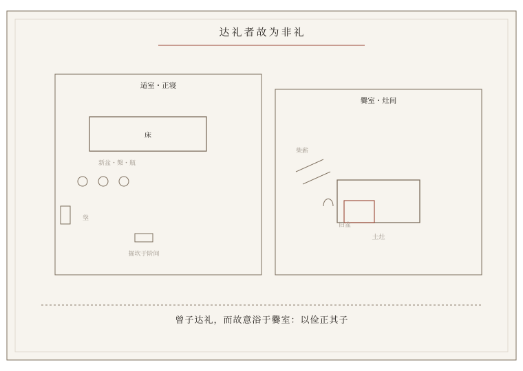

檀弓上 · 三·二十九 · 第 232 课
曾子之丧，浴于爨室。注「见曾元之辞易箦，矫之以谦俭也。礼，死浴于适室」。
说什么事：一个最知礼的人，临死前故意做了一件非礼的事。
落在哪一层：礼，兼及礼意与家法。论「矫」——以身示教。
为何编在此位：上节论葬制之始，此节论治丧之正。正与非正，父子之间自有一法。
【经】曾子之喪，浴於爨室。
【注】见曾元之辞易箦，矫之以谦俭也。礼，死浴於適室。
【疏】此一节论曾子故为非礼，以正其子也。案上易箦之后，反席未安而没，焉得有浴爨室遗语者？以反席之前、欲易之后，足可有言，但记文不备。必知谓曾元之辞易箦故矫之者：曾子达礼之人，应须浴于正寝，今乃浴于爨室，明知意有所为，故云「矫之」也。云「礼，死浴于适室」者，《士丧礼》「死于适室」，下云「甸人掘坎于阶间，为垼于西墙下，新盆槃瓶造于西阶下」，乃浴于适室也。于爨室为谦，无甸人掘坎为垼之事，是俭也。
爨室 灶间，炊爨之所。
浴 浴尸。人死浴而后袭。
适室 正寝。注「礼，死浴于适室」。
矫 注「矫之以谦俭也」。矫正、反之以示。
甸人掘坎 《士丧礼》浴尸之备：掘坎于阶间，为垼于西墙下。
曾子之丧，在灶间浴尸。
此节只七个字，注补一句「矫之以谦俭」。曾子是最知礼的人，临终却命丧事从俭，且俭到不合礼处。这不是不懂，是故意：儿子方才以「病革」为由不肯换箦，他就用一个更不合礼的安排，把儿子的「姑息」纠正过来。
第一层 一句七字之节 经只一句，无一字评。注以「矫」字解之，全节义始出。此可见《檀弓》之笔法：记其事，断在注。
第二层 浴于适室之正 《士丧礼》死于适室，甸人掘坎于阶间、为垼于西墙下、新盆槃瓶造于西阶下，然后浴。一整套器物与人力，是「正」。爨室无此，是「俭」。
第三层 矫之以谦俭 注「见曾元之辞易箦，矫之以谦俭也」。儿子以爱父为名，不肯易箦；父亲便以俭为名，不肯就正寝。一父一子，各以一件「不合礼」的事相争，而所争者正是「什么才是真爱」。此层最见曾子之教：不用言，用身。
第四层 记文不备 疏辨「焉得有浴爨室遗语」——易箦之后反席未安而没，何来遗命？疏解为「反席之前、欲易之后，足可有言，但记文不备」。此辨很老实：承认记载有缺，不硬圆。古人注经，肯说「不备」二字。
与今日何干 凡上辈人临终的安排，晚辈常以为「不必如此」。此节所示：有一种从简，不是省钱，是纠正。看懂了这一层，才不至于把长辈最后一件「不合规矩」的事，当作糊涂。
| 左 | 右 |
|---|---|
| 曾子之丧，浴于爨室 | 灶间，非正寝 |
| 礼，死浴于适室 | 《士丧礼》死于适室 |
| 甸人掘坎于阶间 | 正礼所备 |
| 为垼于西墙下 | 正礼所备 |
| 矫之以谦俭 | 矫曾元之辞易箦 |
| 于爨室为谦 | 无掘坎为垼，是俭也 |
| 记文不备 | 疏自承其缺，不硬圆 |
画一座士人之家的内部，一室分为两半，左右以一道薄墙相隔，各有门。左半是正寝：一间宽敞的室，室中一张大床，床前阶间有一处新掘的小坎，西墙下有一小堆土垼，阶下摆着新盆、槃、瓶三器，器物整齐。右半是灶间：窄小，一个土灶占去大半，灶上一只陶釜，墙角堆着柴薪，地面上只有一只旧盆，无坎、无垼。两半皆无人。不写文字。赭色只用在土灶的灶口与正寝新盆的沿口上。
